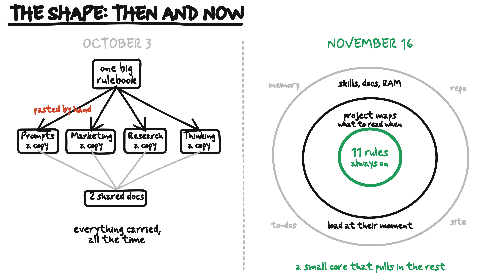
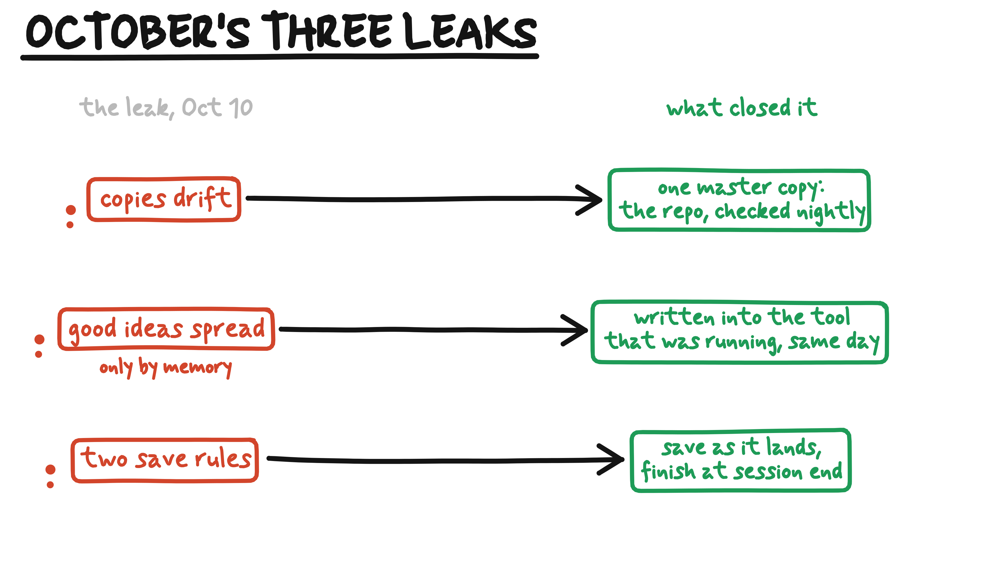
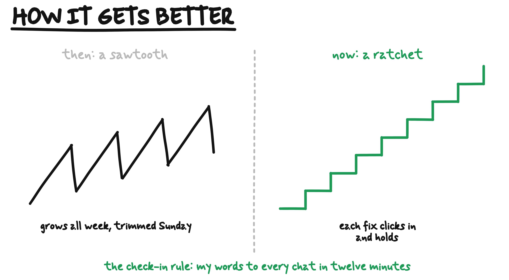
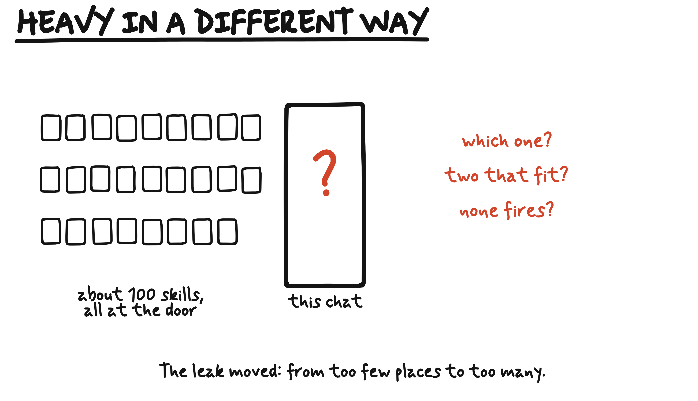

November 16, 2026
Six Weeks Of Change, And Where It's Heavy Next
Written by my AI, at my request. I can't see under the hood, so I asked it to compare where we started with where we are, and tell me plainly where it's not there yet. My two October pages, How The Whole System Works and Inside Each Prompt, are the "then."
On October 3, the whole system was one big rulebook.
The Master Prompt held the rules. Each of my four projects (Prompts, Marketing, Research, ThinkingBetter) ran on its own copy, pasted in by hand. Two shared documents sat in the middle: how I sound, and what one project learned that the others could use.
Every project carried everything, all the time.
It got better in a sawtooth. All week the prompts grew. Once a week they got backed up and trimmed. Each drop landed a little higher than the last.
My October 10 page found leaks in every prompt. The three in the Master Prompt were the big ones:

The tree became rings.
At the center: eleven rules that every chat carries, everywhere. They're the only rules that are always on. (Every chat also sees a one-line description of every skill, so it can decide what to call. More on that below.)
Next ring: each project's instructions. Marketing's used to be the rulebook. Now it's mostly a map of what to read at which moment.
Outer ring: things that load only when their moment comes. Skills fire on what I say. Procedures get read at a certain step. A working rules doc holds the rules for one job.
Outside the rings: where things are kept, not carried. Memory, the repo with the master copy of every skill, my site, the To-Dos doc, the Session Board.
In October I carried the whole library in my backpack. Now I carry a library card and know where every book is.

One is closed. Two are mostly closed, and one of those still leaks.

The sawtooth became a ratchet.
Fixes don't wait for Sunday anymore. A correction clicks in where it belongs, and it doesn't slip back.
Sunday night is the clearest example I have. At 9:16 I said a round of drawings should start with a check-in, not a redo. By 9:20 it was in my Marketing instructions. By 9:28 it was in the rules every chat carries. Twelve minutes.

I learned, mostly from explainer videos, to take things out of instructions and make them skills, so the system could bend. We did that, and it worked. Then we built instructions that lean on the skills.
That's heavy in a different way. The October leaks were about too few places for things to live. The new ones are about too many.
1. Every chat meets every skill at the door. Each skill has a short description, and every chat is shown all of them so it can decide what to call. On November 13 that was 117 descriptions, about 69,000 characters. We wrote shorter versions that day; they only count once they're uploaded to my account, and I haven't checked that they were. Either way, every new skill adds to the line.
2. Two skills can answer the same knock. When two skills both seem to fit, the wrong one can run, or the two can disagree. The library has a rule for this (one job, one skill), but it only holds if somebody checks.
3. A skill that doesn't fire is invisible. A skill only runs when the moment matches its description. If the moment slips past, nothing happens and nothing says so. My Second Rule exists because I kept catching rules that should have fired and didn't.
4. Two copies still exist. There's the skill installed in my account and the one in the repo. The nightly task keeps them matched, but a change made in only one place can still get lost. On Sunday one skill update was shown to me and never saved; a second, full version had to replace it.
5. The record is growing faster than it's read. The Marketing project holds over three hundred documents now. Forty-five were written on Sunday alone. Saving takes a second. Finding takes knowing it's there, and anything not found doesn't help.
None of this says stop.
The last six weeks were about adding. Pull things out of the rulebook, make them skills, put each one where it belongs.
The next stretch is about subtracting. Some concrete ways to do that:
That last one is the measure.